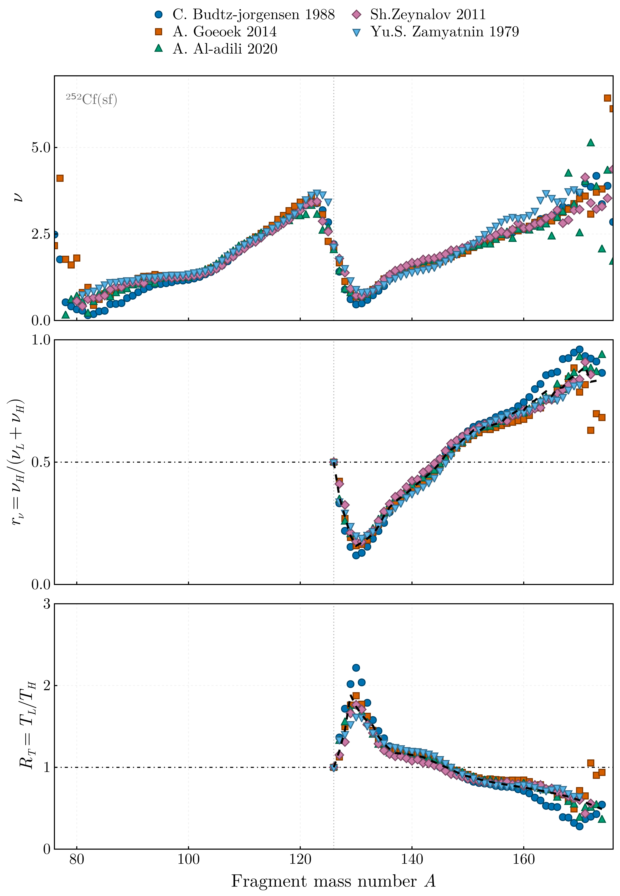
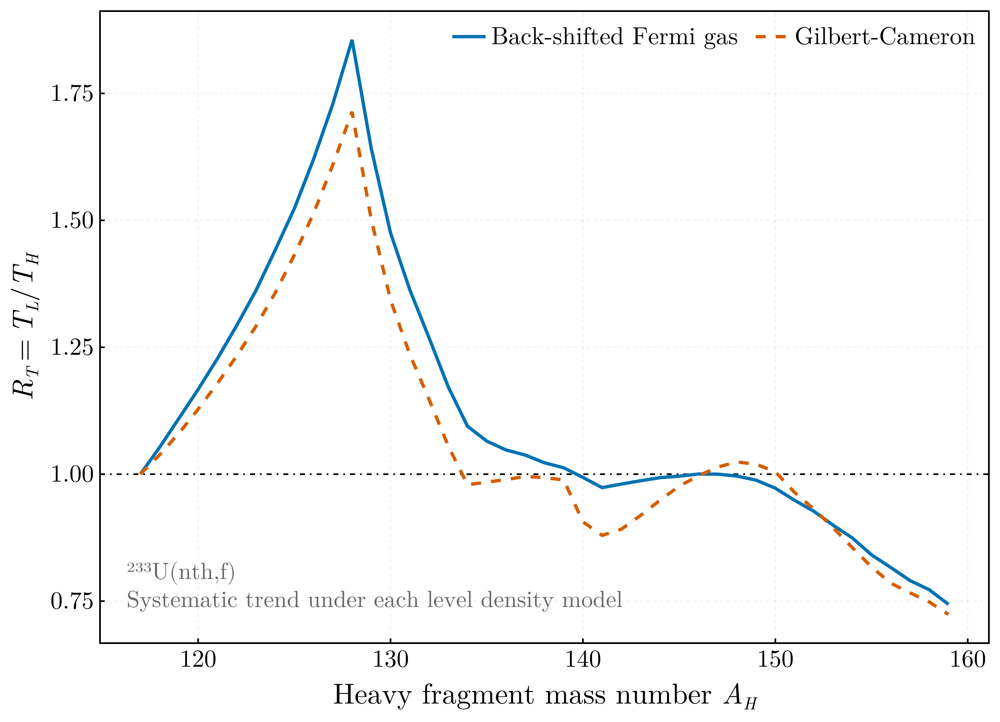

Method
Temperature ratio from multiplicity data
The method and its conventions are those of [1]. The extraction rests on two premises: the prompt neutron multiplicity ratio of complementary fragments follows their excitation energy ratio, eq. (1) of that paper, and the fragments are excited highly enough for their level densities to be of Fermi-gas form, $E^* = a T^2$. For one fragmentation $(A_H, Z)$ with $\rho_Z = a_L/a_H$, the heavy fragment then carries
\[\frac{E_H^*}{\mathrm{TXE}} = \frac{1}{1 + \rho_Z R_T^2}\]
of the total excitation energy. The measured multiplicity ratio $r_\nu = \nu_H/(\nu_L + \nu_H)$ is resolved in mass only: each $\nu(A)$ is a yield-weighted mean over the charges and kinetic energies of that mass. Applied to such means, the premise identifies $r_\nu(A_H)$ with the excitation-weighted mean of the relation over the isobaric charge distribution $p(Z, A_H)$,
\[r_\nu(A_H) = \frac{\sum_Z p(Z, A_H)\, \langle \mathrm{TXE} \rangle_Z \,/\, (1 + \rho_Z R_T^2)} {\sum_Z p(Z, A_H)\, \langle \mathrm{TXE} \rangle_Z}, \qquad \langle \mathrm{TXE} \rangle_Z = Q(A_H, Z) + E^*_{\mathrm{CN}} - \langle \mathrm{TKE} \rangle(A_H),\]
and $R_T(A_H)$ is its root, which is unique: the right-hand side falls strictly from one to zero as $R_T$ grows. This is ratio_averaging = "charge_resolved", the default. The mean total kinetic energy comes from a measured pre-neutron $\langle \mathrm{TKE} \rangle(A)$ named in the configuration; without one, every fragmentation is weighted by $p(Z, A_H)$ alone, and the run says so in its log and in its manifest. A heavy mass between two measured masses takes the value interpolated linearly between them, and one beyond the measured span the value at the nearest measured mass; the run metadata lists both kinds.
The uncertainty of $r_\nu$ is propagated from those of the two multiplicities,
\[\sigma_r^2 = \frac{\nu_L^2\, \sigma_H^2 + \nu_H^2\, \sigma_L^2}{(\nu_L + \nu_H)^4},\]
and that of $R_T$ follows from it by the slope of the inversion. Where a dataset quotes an uncertainty for one fragment of a pair and none for the other, the term of the unquoted fragment is left out, as it was for the values of [1], and the uncertainty carried at that pair is a lower bound. This holds at 53 pairs in 12 of the datasets read. The segment count of the ²⁵²Cf trend depends on it: with those pairs read as quoting no uncertainty, the trend has five segments in place of six, and $\langle R_T \rangle$ is 1.0862 in place of 1.0863, with a propagated uncertainty of 0.0157 in place of 0.0144. The ²³⁵U, ²³⁹Pu and ²³³U trends move by 0.001 or less under the same reading. Where neither fragment quotes an uncertainty the pair quotes none.
For a single effective ratio $R_a$ in place of the per-charge $\rho_Z$ the relation inverts in closed form, eq. (4) of [1],
\[R_T = \left[\frac{1 - r_\nu}{R_a\, r_\nu}\right]^{1/2},\]
with $R_a = \langle a_L \rangle / \langle a_H \rangle$ ("ratio_of_means", the setting of the published extraction) or $R_a = \langle a_L / a_H \rangle$ ("mean_of_ratios"); both averages run over $p(Z, A_H)$. The three averagings coincide for a single charge per mass and differ at second order in the spread of $\rho_Z$ over the charge window. The paper adopts the ratio of means and shows it beside the mean of ratios in its Fig. 2; it remains selectable for that reason.
The extraction involves no fit and no prompt emission calculation. The fragmentation domain (heavy masses, the charges retained about $Z_p(A)$, their probabilities), the mass table (AME2020, [2, 3]), the level density parameters and the relation between $R_T$ and $E_H^*/\mathrm{TXE}$ are those of FissionFragmentsDomain.jl, and the codes that consume $R_T(A_H)$ use the same definitions. The charge distribution is Wahl's $Z_p$ model with the parameters of [4] for the four reactions evaluated there and the systematics of [5] otherwise. The level density parameter is taken from the back-shifted Fermi-gas systematics of [6–8] by default, or from the formula of [9] with the shell corrections of its Table III. Its eq. (21), $a/A = 0.00917\,S + 0.120$, applies to the nuclei it counts as deformed, and eq. (20), $0.00917\,S + 0.142$, to the rest; about a third of the yield-weighted ²⁵²Cf fragments lie in the first deformed region. The shell corrections $S$ are referred to a spherical reference, and eq. (21) corrects them for the deformation of those nuclei [10], so both formulas apply by default. deformed_branch = false applies eq. (20) throughout, the spherical-only setting of Table 2 of [1].

From the measured sawtooth to the temperature ratio, on a shared abscissa: the multiplicity of each fragment of the pair, the ratio formed from them, and the temperature ratio that follows by the exact inversion.
Gilbert-Cameron, model = "GC", returns for fission fragments markedly larger parameters away from closed shells than the back-shifted Fermi gas, with its deformed-nucleus formula where the 1965 paper prescribes it unless deformed_branch = false. Running both models bounds a systematic uncertainty that the propagated experimental uncertainties do not cover.

The two models agree exactly at the symmetric split, where the fragments are identical and the ratio is one for any model, and differ across the shell region. Since the back-shifted Fermi gas superseded Gilbert-Cameron, the spread between them is an upper bound on the systematic uncertainty and not a symmetric error bar.
Why the charge-resolved inversion
- It is the inverse of what the consuming codes do. The Point-by-Point and sequential emission treatments apply a temperature ratio to every fragment pair $(A, Z, \mathrm{TKE})$ with its own $a_L/a_H$, eq. (5) of [11], and so do the Monte Carlo codes CGMF [12] and FIFRELIN [13]. The charge-resolved inversion closes that round trip to rounding. An effective ratio does not: on the ²⁵²Cf(sf) domain with the back-shifted Fermi gas, the ratio of means misses it by $2.9 \times 10^{-3}$ in $R_T$ along the systematic trend and the mean of ratios by $1.4 \times 10^{-2}$, both at the doubly magic heavy fragment, $A_H = 132$; over $0.8 \le R_T \le 1.45$ and the four shipped systems the misses reach $4.2 \times 10^{-3}$ and $1.3 \times 10^{-2}$.
- It returns $R_T = 1$ from $r_\nu = 1/2$ at the symmetric split exactly, provided the charge set there is its own mirror under $Z \to Z_0 - Z$. The terms of the sum then pair as $\rho$ and $1/\rho$ with equal weight, and $1/(1 + \rho) + 1/(1 + 1/\rho) = 1$; the excitation weights pair the same way, since $Z$ and $Z_0 - Z$ are one fragmentation.
- The excitation weight follows from the premise. $\nu_L/\nu_H = E_L^*/E_H^*$ holds, if at all, for each fragmentation separately, and a mass-resolved multiplicity weights each fragmentation by its excitation energy. At the $Z = 50$ shell the $Q$-value and $a_L/a_H$ change together across the charge window, so the weight matters there: omitting it moves $R_T$ at $A_H = 130$ by $7 \times 10^{-3}$ to $1.1 \times 10^{-2}$ along the systematic trends of the four shipped systems, with the $\langle \mathrm{TKE} \rangle(A)$ of Göök et al. (²⁵²Cf), Al-Adili et al. (²³⁵U), Wagemans et al. (²³⁹Pu) and Geltenbort et al. (²³³U). $\mathrm{TKE}$ is a property of the split, so where a dataset gives both $A$ and $A_0 - A$ the pair takes their mean. Double-energy measurements differ in their pulse-height-defect calibration by several MeV; a run records the offset of the input's yield-weighted mean from the energy standard of the system, the recommendation of Gönnenwein as tabulated in [14].
- FIFRELIN fixes $R_T(A_{\mathrm{CN}}/2) = 1$ [13]; the charge-resolved inversion obtains the same value from the data.
- Uncertainties propagate with the exact slope $\partial R_T/\partial r_\nu$ of the inversion, the reciprocal of $-\sum_Z w_Z\, 2 \rho_Z R_T/(1 + \rho_Z R_T^2)^2$ with the normalised weights $w_Z$, in place of the closed-form $-1/(2 R_T R_a r_\nu^2)$ of an effective ratio.
Exact behaviour at the symmetric split
For a fissioning nucleus of even mass number the two fragments of the symmetric split are the same nuclide. The charge polarization vanishes there, $\Delta Z(A_0/2) = 0$. This is a property of the charge model and is not imposed: Wahl's 1988 fits pass through point X of their Fig. 2 at the symmetric split, and the steep branch of the 2002 systematics crosses zero there linearly [4, 5]. The retained charges are then invariant under $Z \to Z_0 - Z$, and the multiplicity ratio is exactly one half, which the fit pins. $R_T(A_0/2) = 1$ follows under the charge-resolved inversion and under the ratio of means, whose two averages run over one set of nuclides. The mean of ratios cannot reproduce it: the per-charge ratios come in reciprocal pairs of equal weight, and the arithmetic mean of $x$ and $1/x$ exceeds one unless $x = 1$. This leaves $R_T(A_0/2)$ below one, by $1 \times 10^{-5}$ to $2 \times 10^{-4}$ on the four shipped domains.
A run checks both conditions (the invariance of the charge set, and $R_T$ from $r_\nu = 1/2$ at $A_0/2$) and records them, so that an input that violates them is reported. A tabulated charge distribution may be given in place of Wahl's model; its polarization at $A_0/2$ is taken as tabulated unless zero_polarization_at_symmetry forces it to zero, as the published extraction did.
Description by joined segments
The ratio extracted point by point is scattered, and for some datasets sparse, so it is $r_\nu$ that is described by joined segments and $R_T$ that follows by the exact relation above. In the paper the segments were drawn by hand through the ratio of each dataset, and this package was not used. Here their number and their breakpoints are selected from the data, and the combination of several datasets into one trend (Combining datasets, below) is my own addition. The total averages therefore agree with the published ones at the per-cent level and not to the quoted digits. The model is continuous and piecewise-linear, written in the truncated-power basis
\[f(x) = \beta_0 + \beta_1 (x - x_0) + \sum_k \gamma_k (x - \psi_k)_+,\]
in which continuity at every breakpoint holds identically and the fit at fixed breakpoints is one weighted linear least-squares solve, yielding the parameter covariance [15]. Breakpoints are restricted to abscissae present in the data and searched exhaustively, which is tractable over a fragment mass range and returns the global optimum. The number of segments is chosen by the Bayesian information criterion [16], which penalises both the extra slope and the extra breakpoint; its value at every order examined is kept, so the choice can be audited. The sample size and the degrees of freedom count measurements, not points. A point of a dataset that the retrieval interpolated onto integer masses counts as the ratio of the dataset's measured points to its written rows, and a point of the combined curve as the fraction the combination gives it, set out under Combining datasets. Interpolated points share the measurements that bracket them; counted as independent, they would favour extra segments.
The fraction $f$ enters a fit in one place. A point of uncertainty $\sigma$, taken as one measurement, has the weight $f/\sigma^2$. The same weight is used in the least-squares solve, in $\chi^2 = \sum (f/\sigma^2)\, r^2$ and in the information matrix $X^\mathsf{T} W X$, and the degrees of freedom are $\sum f$ minus the number of parameters. A fraction common to every point of a dataset leaves the coefficients unchanged and divides their covariance by $f$. The combined curve is fitted by the same rule. The standard error of a combined value already contains the fractions of its contributors, so the fit is given the uncertainty of one measurement, $\sigma_{\bar{r}} \sqrt{f}$, together with $f$, and $f$ is not applied twice. The systematic trend of a pool that holds a single interpolated dataset is then identical to that dataset's own fit in breakpoints, coefficients, $\chi^2$, degrees of freedom and covariance.
The sensitivity of a result to orders above the selected one is reported with it: the systematic trend is refitted with one and two more segments, and its total average at each order is written beside the selected one. A lower order is not refitted; where it is about as well supported as the selected one, as five segments are for ²³⁹Pu, the next paragraph applies. An order whose search would examine more than max_breakpoint_sets breakpoint sets is not refitted, and its column is left empty.
The propagated uncertainty of a curve is that of its coefficients at the selected breakpoints. It does not contain the uncertainty of the order or of the breakpoint positions. Where two orders are about equally supported, the curves they give can differ by more than that uncertainty near the breakpoints in which they differ. For ²³⁹Pu the criterion differs by 0.83 between five and six segments, and $R_T$ at $A_H = 128$ is 1.66 ± 0.11 with six and 2.18 ± 0.27 with five, each with its propagated uncertainty; from $A_H = 136$ on the two curves agree within 0.002. The uncertainty a run reports for a systematic trend contains part of this, through the jackknife described under The uncertainty of the trend: the refits behind it select their own breakpoints, and for ²³⁹Pu at $A_H = 128$ it is 0.23.
The coefficient covariance $(X^\mathsf{T} W X)^{-1}$ is scaled by $\max(1, \chi^2/\mathrm{dof})$ where the data quote uncertainties: it is inflated where the residuals exceed what the quoted uncertainties predict, and never shrunk below the quoted scale. Where no point quotes an uncertainty the weights are uniform and carry no scale, so the fit is ordinary least squares and the covariance is scaled by $\chi^2/\mathrm{dof}$ alone.
Each segment must hold min_points_per_segment data points, four in the shipped configurations, and so extends over at least three mass units.
A dataset is offered as a segmented curve of its own only if it provides a complete fragment pair at a fraction min_pair_coverage of the mass numbers of the fragmentation range. Below that floor it is still read, diagnosed and pooled into the systematic trend, but no curve is fitted to it alone: with pairs at few mass numbers the breakpoint search cannot place the minimum where the data do not reach, and the curve it returns would show structure between the measurements that a consuming code could not distinguish from a measured feature.
Two exact constraints are enforced during the search. The fit is pinned to one half at the symmetric split; a dataset whose complete pairs begin above the split has no point at which the identity applies, and its curve is fitted unpinned. The fit may not leave the interval $(0, 1)$, outside which the temperature ratio relation is undefined. Since a piecewise-linear function attains its extrema at its pivots, the bound is tested exactly, at the pivots.
One curve per dataset, and one systematic trend
The datasets of a fissioning nucleus can differ well beyond their quoted uncertainties, and where they do, the temperature ratio can only be determined separately for each of them. A run therefore produces one segmented curve per dataset that reaches the coverage floor, fitted to that dataset alone.
A dataset curve is flagged when its range covers a required window, the window of required_windows in which the minimum lies, but its segmented $r_\nu$ has no interior minimum, that is, no interior pivot below both its neighbours. The reason is recorded in the dataset diagnostics and the run metadata. A curve that begins above the start of the window is limited in range, which its coverage and its first pair already state, and is not flagged; without a required window nothing is flagged. A flagged curve stays in the manifest: a consuming code selects a curve by its label and can read the flag. The test is of the shape of the fitted curve and not of its $\chi^2/\mathrm{dof}$, which has no common scale across datasets. In the shipped runs it ranges from $2 \times 10^{-5}$ for a dataset quoting no uncertainties to 26 for one quoting small ones. The shipped runs flag Tsuchiya 2000 for ²³⁹Pu, one segment from $A_H$ = 123, and Fraser 1966 for ²³³U, which rises from its first pair at $A_H$ = 126. No ²⁵²Cf or ²³⁵U curve is flagged: Bowman 1963, Britt 1964 and Mehta 1973 of ²⁵²Cf begin at $A_H$ = 133, 132 and 135, past the start of the window, and do not cover it.
Alongside them a run produces a systematic-trend curve, fitted through all the pooled data, with a breakpoint required inside a window around the heavy magic fragment, where the minimum lies: required_windows in the configuration, $A_H \in [128, 132]$ in the four shipped configurations. Without a window the minimum is searched for like any other breakpoint. Its rise above the most probable fragmentation therefore falls between those of the individual sets. This is the curve to use where a dataset is too sparse or too scattered to resolve the shape on its own, and where no energy partition from a scission model is available.
The curves are alternatives and are not averaged. A prompt emission code takes one of them as input, and the choice is made downstream by comparing the prompt neutron multiplicity distributions and fragment yields the code produces with experimental data. Each curve is traceable to the measurement it came from.
The total average
Prompt emission codes that take a single temperature ratio for all fragmentations, rather than a function of mass number, need one number. It is obtained by averaging over a fragment mass yield distribution,
\[\langle R_T \rangle = \frac{\sum_{A_H} Y(A_H)\, R_T(A_H)}{\sum_{A_H} Y(A_H)},\]
taken over the heavy branch, with $Y$ the pre-neutron mass yield. The temperature ratio is a function of the primary heavy-fragment mass number, so a post-neutron distribution would weight each ratio by the yield of a different fragmentation. The normalisation of $Y$ cancels. The two fragments of a split are counted in one event, so the pre-neutron yield obeys $Y(A) = Y(A_0 - A)$ exactly. By default, where a distribution is measured on both wings, each mass takes the mean of the two before the average; a difference between the wings, such as a backing loss on one side of a double-energy measurement, then enters once and equally. A mass measured on one wing alone gives the yield of its complement. The published averages took the distributions as measured.
A distribution measured over part of the heavy wing gives the ratio averaged over that part, which is not a property of the fission yield. Coverage is measured in yield, against the primary distribution of the system: the share of its heavy-fragment yield over the fragmentation range at the masses the distribution holds. The distribution's own yields cannot measure it, since a sparse digitisation normalised over the masses it holds sums to as much as a complete one. A distribution below min_yield_coverage is therefore read but not averaged over. Every average states its yield fraction, the share of the distribution's yield over the range that falls at the mass numbers of the curve: one for a curve spanning the range, less for a dataset whose complete pairs stop short of it.
This is the quantity the literature tabulates, and it is not the mean over the fragment mass range. That mean weights every mass number equally, so the far-asymmetric tail, where the yield is smaller by orders of magnitude, counts as much as the peak. Both are reported, under names that distinguish them.
The form of the uncertainty does not change the value. The uncertainty propagates the fit covariance,
\[\sigma^2 = w^\mathsf{T} C\, w + \sum_{A_H} \left(\frac{R_T - \langle R_T \rangle}{\sum Y}\right)^2 \sigma_Y^2, \qquad w = \frac{Y}{\sum Y}, \qquad C = D\, J \Sigma J^\mathsf{T} D,\]
with $J \Sigma J^\mathsf{T}$ the covariance of the fitted $r_\nu$ at the tabulated mass numbers and $D$ the diagonal matrix of the slope $\partial R_T/\partial r_\nu$ of the inversion at each of them. The tabulated points of a fitted curve are functions of a few coefficients and are not independent. The independent-points form, which replaces $w^\mathsf{T} C w$ by $\sum (Y/\sum Y)^2 \sigma_{R_T}^2$, is the approximation of the published tables. It is written beside the uncertainty of the average, as R_T_uncertainty_independent_points, and understates it by a factor of two to five for the curves of the four shipped systems. It is formed from the tabulated uncertainties of a curve, for a trend that carries a jackknife the larger of the two at each mass number, and concerns those points, not the correlation between the combined points of a trend treated below. The yield term is common to both forms, so a multiplicity dataset quoting no uncertainties still has an uncertain average. Correlations between the yields at different mass numbers are neglected, since the sources do not report them.
For the systematic trend the first term is the larger of $w^\mathsf{T} C w$ and the jackknife of the same average over refits of the trend with half of the pooled datasets left out, as set out under The uncertainty a run reports.
Combining datasets
Several measurements of one fissioning system are not merged into a single dataset. Each is fitted on its own, and one further curve is fitted to their combination.
The combination is formed mass number by mass number: the available values are combined with inverse-variance weights that include an additional between-dataset variance $\tau^2$, estimated from their dispersion [17],
\[v = \frac{\sigma^2}{f}, \qquad w = \frac{1}{v + \tau^2}, \qquad \bar{r} = \frac{\sum w\, r}{\sum w}, \qquad \sigma_{\bar{r}} = \left(\sum w\right)^{-1/2}.\]
$f$ is one for a dataset measured at integer masses. A dataset measured at non-integer masses is interpolated onto the integers by the retrieval, and its neighbouring rows then share their bracketing points; it enters with $f$ = values measured / rows written, at most one, so that it counts for what was measured. Both numbers come from its retrieval record: the values measured are the rows retrieved minus any limits left out, and a measurement at an integer mass of the grid counts as one. An uncertainty written as zero is read as not quoted.
A value that represents the share $f$ of a measurement is given the variance $\sigma^2/f$: a dataset of $n$ rows and $m$ measurements then holds $\sum f/\sigma^2 \approx m/\sigma^2$ of information about a common level, that of its measurements. The approximation replaces the banded correlation of neighbouring interpolated rows by a uniform inflation of their variance; at one mass number a dataset holds one row, so the combination sees no correlation between its values, and the inflation stands for the redundancy the fit of the combined curve would otherwise count $n/m$ times. $\tau^2$ is the variance of the offset by which a dataset's curve departs from the others as a whole, and interpolation does not dilute it.
The combined value has the variance $1/\sum w$. Taken as whole measurements, the same values with the same weights would give it the variance $\sum w^2 (\sigma^2 + \tau^2)/(\sum w)^2$, and the measured fraction of the combined point is the ratio of the two,
\[\bar{f} = \frac{\sum w^2\, (\sigma^2 + \tau^2)}{\sum w} = 1 - \frac{1}{\sum w} \sum w^2 \sigma^2\, \frac{1 - f}{f}.\]
Without a between-dataset variance this is $\sum (f^2/\sigma^2) / \sum (f/\sigma^2)$, the weighted mean of the fractions. Where $\tau^2$ dominates it tends to one: the values then scatter as whole measurements whatever share of one each amounts to, and the combined point counts as one measurement in the sample size and the degrees of freedom of the trend.
Datasets of one experiment enter the pool as one. A retrieval record names, under correlated_with, the other datasets of the experiment a dataset belongs to, and under correlation_relation how they are related: a republication, an alternative analysis of the same events, a repeated run, or a complementary range. Runs or analyses on one apparatus share their systematic errors; pooled side by side, they would count as independent measurements in $Q$ and carry the weight of several. Pooled datasets that name one another therefore enter the pool as one curve, at the uncertainty of one measurement and with the measured fraction of each of its points as its $f$, and the refits of the next section leave the experiment out as one. How that curve is formed follows the relation, taken from the records where every member states the same one.
Alternative analyses, two or more reductions of one set of events, share their statistical errors, so nothing is gained by averaging them as independent values. At a mass number the curve takes the mean of the members, and as its uncertainty the largest a member quotes with half the difference between the members added in quadrature, which carries the uncertainty of the reduction; for two members $a$ and $b$
\[r = \frac{r_a + r_b}{2}, \qquad \sigma = \left[\max(\sigma_a, \sigma_b)^2 + \left(\frac{r_a - r_b}{2}\right)^2\right]^{1/2}.\]
A mass number one member alone holds takes that member's value and uncertainty, and where no member quotes an uncertainty the point quotes none. The measured fraction of the point divides its quoted part alone. With $\bar{f}$ the mean of the members' fractions at the mass number and $d$ the half difference,
\[f = \frac{\sigma_{\max}^2 + d^2}{\sigma_{\max}^2/\bar{f} + d^2},\]
the ratio of the variance of the point as written to its variance with the interpolation counted, in which the quoted part alone is divided by $\bar{f}$: interpolation spreads a statistical error over the rows written, and the difference between two reductions is not one. The fraction is $\bar{f}$ where the analyses agree and tends to one where their difference dominates.
For a republication (one result published twice), only the superseding dataset enters the pool. The superseded one, which its record marks with a qualifier beginning superseded:, is still read, fitted and written, and offers its own curve. Where its successor is itself excluded by the configuration or forms no fragment pair, the superseded dataset is still kept out of the pool, with a warning in the log: a withdrawn result does not stand in for the one that replaced it. If the number of unmarked members of a republication is not exactly one, nothing is superseded and the members are combined as a pool. Repeated runs and complementary ranges are combined by the pooling rule given above, and so are the members of an experiment whose records do not all state the same relation. Each member still offers its own segmented curve. In the shipped inputs Basova 1979 and Zamyatnin 1979 are alternative analyses of one experiment, for ²⁵²Cf (EXFOR 41720002 and 41694002) and for ²³⁹Pu (41720004 and 41694003); their tables differ by 0.34 and 0.36 neutrons rms.
Pooled as two measurements they would give the ²⁵²Cf trend 5 segments, breakpoints at 130, 137, 143 and 149, χ²/dof = 1.56 and ⟨R_T⟩ = 1.0908; pooled as one it takes 6 segments, breakpoints at 129, 133, 137, 142 and 149, χ²/dof = 1.63 and ⟨R_T⟩ = 1.0863, and 1.0840 with the experiment left out. For ²³⁹Pu, with Nishio 1995 still pooled, the grouping alone keeps 6 segments and the breakpoints at 126, 130, 137, 149 and 154, with χ²/dof = 0.47 in place of 0.42 and ⟨R_T⟩ = 1.0116 in place of 1.0293. The shipped ²³⁹Pu pool, which excludes Nishio 1995 as well, takes 6 segments, breakpoints at 126, 130, 137, 144 and 155, χ²/dof = 0.53 and ⟨R_T⟩ = 1.0296, and 1.0216 with the experiment left out.
The fixed-effect weights $a = 1/v = f/\sigma^2$ are then the inverse variances of the values, so the statistic $Q = \sum a\,(r - \bar{r}_a)^2$ the variance is estimated from has the expectation $k - 1$ for $k$ datasets where they do not differ, and $\tau^2$ is DerSimonian and Laird's moment estimate,
\[\tau^2 = \max\!\left(0,\; \frac{Q - (k - 1)}{\sum a - \sum a^2 / \sum a}\right),\]
and $(\sum w)^{-1/2}$ the standard error of the mean exactly. A value that is the only one at its mass number is passed through with $\sigma/\sqrt{f}$. Where $\tau^2$ dominates, an interpolated dataset weighs about as much as a measured one: each contributes one draw of the offset between datasets, irrespective of its own precision.
Where no value at a mass number quotes an uncertainty, each is taken to have the variance $s^2/f$ of its share of a measurement of variance $s^2$; the values are averaged with the weights $f$, and $\mathrm{E}[\sum f (r - \bar{r})^2] = s^2 (k - 1)$ gives $s^2 = \sum f (r - \bar{r})^2 / (k - 1)$. The mean has the standard error $s/\sqrt{\sum f}$, which reduces to the usual standard error of the mean when the fractions are equal. Under this model the whole dispersion is that of shares of a measurement, so the measured fraction of the combined point is $\sum f^2/\sum f$. If the values coincide there is no dispersion to estimate $s^2$ from, and the combined point quotes no uncertainty. A value quoting no uncertainty beside values that do takes the median of the quoted uncertainties at its mass number, as a point of a fit does.
The datasets of one system disagree by ten to twenty times their quoted uncertainties. $\tau^2$ therefore dominates $\sigma^2$, the weights become nearly equal, and the combination is not dominated by the dataset that quotes the smallest errors. With $\tau^2$ included, the chi-squared of the combined curve measures the quality of the fit and no longer the disagreement between datasets: for ²⁵²Cf it falls from about 16 to about 2.
A reduced chi-squared of the trend below one is expected here and does not indicate too many segments. The standard error of a combined value treats the disagreement between datasets as independent from one mass number to the next, whereas the deviation of a dataset from the combined curve is largely an offset and a slow drift, correlated along the mass axis (next section). The combined curve therefore scatters about a smooth line far less than its standard error implies. For ²³⁵U the residuals of the trend give a reduced chi-squared of 5.4 against the quoted uncertainties alone and of 0.37 with $\tau^2$, which is about sixteen times $\sigma^2$ at the median. ²³⁹Pu gives 0.53 with $\tau^2$. The selection of the segment count does not depend on that scale, since the criterion takes the noise from the residuals. Nor is it limited by max_segments: with the limit raised from 6 to 12 every trend selects the order it selects at 6, six segments for ²⁵²Cf, ²³⁵U and ²³⁹Pu and three for ²³³U, and the criterion rises at every order above.
For the same reason no dataset is rejected for lying far from the others: in units of the quoted uncertainties none of them agrees with any other, so such a criterion would reject whatever it was tuned to reject. The properties of a dataset that can be assessed without reference to the rest are reported for every dataset: how many usable fragment pairs it has, whether its ratio stays inside $(0,1)$, whether it satisfies the identity at the symmetric split, and whether complementary multiplicities sum to the total. Exclusions are named explicitly in the configuration.
The archive itself is the first filter: the retrieval rejects datasets whose reaction code or units say they are not the quantity asked for, and records why. The structural diagnostics are the second filter, and they detect defective data. For ²⁵²Cf the complementary sums separate into sets consistent with the total multiplicity of 3.76 (Alkhazov 3.75, Mehta 3.72, Budtz-Jørgensen 3.70, Vorobiev 3.83) and sets a tenth high (Basova 4.27, Zamyatnin 4.21, Ding Shengyao 4.18, Göök 4.17), a discrepancy of normalisation rather than of measurement. The shipped configurations name four exclusions, each with its reason; data/README.md of the repository gives the attribution of each.
The uncertainty of the trend
A dataset departs from the others by an offset and a slow drift along the mass axis, not point by point, so the errors of neighbouring combined values are not independent. A smooth curve through values with correlated errors averages them down less than it would independent ones: for errors correlated between neighbours with a coefficient $\rho$ its variance is larger by about $(1 + \rho)/(1 - \rho)$ than for independent ones. The covariance of the systematic trend is therefore formed with a correlation matrix of the combined points, built from the pooled datasets themselves.
The correlation of the error of one dataset along the mass axis is estimated from the deviations $d(A)$ of its $r_\nu$ from the combined curve. The deviations are centred per dataset: the mean of each dataset's deviations is removed before the products are formed. The correlogram is
\[\rho_k = \frac{\sum f\, d(A)\, d(A + k)} {\left[\sum f\, d(A)^2 \, \sum f\, d(A + k)^2\right]^{1/2}}, \qquad k = 1, \dots, 8.\]
Each sum runs over the pooled datasets and, within each, over the pairs of mass numbers $k$ apart that it holds; $f$ is the pooling factor of the dataset. A mass number held by one dataset alone is left out, since the deviation there vanishes by construction. A lag that no dataset spans has no value. A dataset that shares fewer than three mass numbers with the others is left out as well: two deviations less their mean are opposite and equal, a first lag of minus one by construction.
The estimate is biased low. Centred per dataset, it is the estimate of a short centred series, and for a series of $n$ points and a lag-one correlation $\rho$ its expectation falls short of $\rho$ by about $(1 + 3\rho)/n$ to first order in $1/n$ [18, 19]. For the 30 to 50 masses of a dataset and $\rho$ near 0.8 that is 0.07 to 0.11. The combined curve, moreover, carries a share of every other dataset's error into each deviation. The fitted $\rho$, and with it the propagated uncertainty of the trend, are therefore on the low side; no correction is applied to $\rho$. In the simulations of the calibration at the end of this section, pools generated with $\rho$ = 0.83 to 0.97 are fitted as 0.67 to 0.85 on average, lower by 0.12 to 0.23. The uncertainty a run reports for the trend does not rest on the propagated one alone: it is the larger of that and the jackknife over refits with pooled datasets left out, which does not use $\rho$.
The kernel $\rho^k$ of an AR(1) error is fitted to the first lags of the correlogram in least squares, minimising $\sum_k (\rho_k - \rho^k)^2$ over autocorrelation_lags of them, four by default. It is fitted to several lags rather than read from the first, because the measured correlograms decay more slowly than the powers of their first lag. $\rho$ is bounded to $[0, 0.999]$: a negative estimate is taken as no correlation. Where no lag can be estimated the trend is fitted with independent points.
Each pooled dataset is taken to err along the mass axis with that correlation and independently of the others. The combined value at $A$ carries the share $s_i(A)$ of dataset $i$, its normalised weight; the shares at one mass number sum to one. Two combined values are then correlated as
\[R(A, A') = \rho^{|A - A'|} \sum_i \left[s_i(A)\, s_i(A')\right]^{1/2},\]
where the sum runs over the datasets holding both mass numbers. Where the same datasets hold both with the same shares, $R(A, A') = \rho^{|A - A'|}$. A dataset held at one of the two and not at the other brings an error the other value does not share, and lowers the entry: a dataset on a two-unit mass grid lowers the correlation between neighbouring combined points and not that between next-neighbours.
The correlation does not change the coefficients, the breakpoints or the selected number of segments of the weighted least-squares fit. It changes their covariance, which for errors of covariance $\Sigma$ is the sandwich
\[C_\beta = (X^\mathsf{T} W X)^{-1}\, X^\mathsf{T} W \Sigma W X\, (X^\mathsf{T} W X)^{-1}, \qquad \Sigma = W^{-1/2} R\, W^{-1/2},\]
with $W$ the fit weights $f/\sigma^2$ of the combined points; for $R = I$ it is $(X^\mathsf{T} W X)^{-1}$.
The scale of this covariance compares $\chi^2$ with its expectation under such errors. With $M = I - X (X^\mathsf{T} W X)^{-1} X^\mathsf{T} W$, the expected residual sum of squares is $\mathrm{tr}(M^\mathsf{T} W M \Sigma) = \mathrm{tr}(PR)$, where $P$ is the residual projector of the weighted design $\tilde{X} = W^{1/2} X$. This expectation is expressed through the fit's own degrees of freedom, which count measured fractions and breakpoints:
\[\mathrm{E}[\chi^2] = \mathrm{dof}\, \frac{\mathrm{tr}(PR)}{\mathrm{tr}(P)}, \qquad P = I - \tilde{X} \left(\tilde{X}^\mathsf{T} \tilde{X}\right)^{-1} \tilde{X}^\mathsf{T}.\]
The two coincide for $R = I$. The covariance is scaled by $\max(1, \chi^2/\mathrm{E}[\chi^2])$, and by $\chi^2/\mathrm{E}[\chi^2]$ alone where no point quotes an uncertainty. With positively correlated errors a smooth fit absorbs part of the error, and $\mathrm{E}[\chi^2]$ falls below the degrees of freedom, to 0.653 of them for ²³⁵U and 0.485 for ²³⁹Pu. The reduced chi-squared of the ²³⁵U trend, 0.37, is consistent with correlated errors under a smooth fit: relative to its expectation, $\chi^2$ is 0.57. That of the ²³⁹Pu trend, 0.53, is 1.09 times its expectation, and the covariance of that trend is scaled by it.
The table gives the values a run writes for the four shipped systems, with inputs retrieved by ExforFissionData.jl v0.8.0: the columns deviation_autocorrelation, reduced_chi_squared and chi_squared_over_expectation of the curve table.
| System | $\rho$ | $\chi^2/\mathrm{dof}$ | $\chi^2/\mathrm{E}[\chi^2]$ |
|---|---|---|---|
| ²⁵²Cf(sf) | 0.865 | 1.63 | 3.27 |
| ²³⁵U(nth,f) | 0.691 | 0.37 | 0.57 |
| ²³⁹Pu(nth,f) | 0.811 | 0.53 | 1.09 |
| ²³³U(nth,f) | 0.804 | 1.61 | 2.32 |
Refitted with the combined points taken as independent, a number a run does not write, the propagated uncertainties of $\langle R_T \rangle$ over the primary yield distribution would be 0.0033, 0.0074, 0.0088 and 0.0295, against 0.0144, 0.0152, 0.0231 and 0.0883 with the correlation. The propagated $\sigma(R_T)$ of the trends is larger by a median factor of 3.6, 1.9, 2.2 and 2.7.
The jackknife over the pooled datasets
The matrix does not account for a constant offset of one dataset from the others: the correlogram removes the mean of each dataset, so such an offset appears in no lag and in no matrix built from $\rho$. The propagated covariance is, moreover, that of the coefficients at the selected breakpoints, formed with a $\rho$ that is biased low. What the datasets differ by beyond that, and how far the selected breakpoints rest on the datasets that happen to be pooled, is measured by refitting the trend with pooled datasets left out, the datasets of one experiment together. Every refit selects its own number of segments and its own breakpoints.
With $k$ pooled datasets or experiments, each refit leaves out $d = \lfloor k/2 \rfloor$ of them. There are $N = \binom{k}{d}$ such subsets $S$, and for a quantity $\theta$ of the trend the values $\theta_S$ of the refits give the delete-$d$ jackknife variance [20]
\[\sigma_{\mathrm{jack}}^2 = \frac{k - d}{d\,N} \sum_{S} \left(\theta_S - \bar{\theta}\right)^2 .\]
For the mean of $k$ values it is $s^2/k$, the usual estimate of the variance of a mean, whatever $d$. With two or three pooled datasets $d = 1$, and it is the delete-one jackknife $\frac{k-1}{k} \sum_i (\theta_i - \bar{\theta})^2$ over the leave-one-out refits. With four, each refit rests on two.
Half of the datasets are left out, and not one, because the trend is not a smooth function of the data: its breakpoints are selected, and a refit either keeps them or moves them. For estimates that are not smooth, such as quantiles, the delete-one jackknife is known to be inconsistent, and the delete-$d$ jackknife with $d$ a fixed fraction of $k$ to be consistent [20]. A fit with selected breakpoints is covered by neither result, and the choice rests on what the delete-one form does here and on the simulations below. Where a fraction $p$ of the $k$ leave-one-out refits moves a breakpoint and shifts $R_T$ at a mass number by $\Delta$, it gives $\Delta\,[(k - 1)\,p\,(1 - p)]^{1/2}$ there, which grows with $k$, although an estimate that takes one of two values $\Delta$ apart has a standard deviation of at most $\Delta/2$. For ²⁵²Cf at $A_H = 130$, eight of the thirteen leave-one-out refits keep the breakpoints at 129 and 133 and five place one at 130, which moves $R_T$ by 0.37: the delete-one jackknife there is 0.62, against 0.21 with six left out. Refits without half of the datasets move the breakpoints in nearly every refit, so that no single change of breakpoints is multiplied by $k - 1$.
Where there are at most jackknife_subsets subsets, 35 by default, every one is refitted; that holds for up to seven pooled datasets or experiments. Above that, that many distinct subsets are drawn with the seed jackknife_seed, 35 of the 1716 for the thirteen experiments of ²⁵²Cf. At a mass number that $n$ of the refits reach, the variance is
\[\sigma_{\mathrm{jack}}^2 = \frac{k - d}{d}\, \frac{N - 1}{N}\, \frac{1}{n - 1} \sum_{S} \left(\theta_S - \bar{\theta}\right)^2 ,\]
which is the form above for $n = N$ and the estimate of it from the $n$ refits otherwise. A draw adds its own sampling error. Between sixteen draws of 35 subsets, the jackknife standard deviation of the ²⁵²Cf trend varies by 12 % at the median mass number, by up to 28 % at one, and by 9 % for $\langle R_T \rangle$; between draws of 140 it varies by 4 %, 18 % and 2 %. Thirteen experiments leave about 20 % in it whatever the draw. Another jackknife_seed shows the size of the effect for a given pool.
For the temperature ratio at the mass numbers of the trend, the same sum taken over products gives the jackknife covariance $\Sigma_J(A, A')$, and $(w^\mathsf{T} \Sigma_J\, w)^{1/2}$ is the jackknife of the average $w^\mathsf{T} R_T$. Where every refit reaches every mass number the weights reach, it is the jackknife of the average itself, since the average of a refit is the same weighted sum of its values; otherwise it is formed mass number by mass number. A refit that does not reach a mass number is left out of the sum there, and a mass number that fewer than two refits reach has no jackknife. Where only some of the pooled datasets cover a mass number the jackknife there is biased, since the refits that reach it are those that keep some of them: for a mean of the datasets that cover it, the jackknife variance is low by a sixth where two of four cover it and high by a quarter where three do, and where one experiment alone covers it the jackknife does not contain that experiment's own error at all. The covariance between two mass numbers that different refits reach is damped as well, which lowers the jackknife of an average that draws on both. A refit whose datasets do not reach the symmetric split is fitted unpinned, and one whose datasets admit no breakpoint in a required window without it; both enter the jackknife at the mass numbers they hold, and the design counts them. A refit that gives no curve is left out, and the log says how many. With two pooled experiments the jackknife is half the difference of the two refits; the log notes this case. Where the trend is pinned, every refit that reaches the pin holds the same value, and the jackknife is zero as the propagated uncertainty is.
The jackknife is an estimate from $k$ pooled datasets and carries about $k - 1$ degrees of freedom where all of them cover a mass number, and fewer where fewer do: for four experiments its standard deviation is itself uncertain by about 40 %, and an error in units of it has tails like those of a $t$ distribution with three degrees of freedom, not those of a normal one.
The refits with one dataset left out are written as well, in leave_one_out_<run>.csv: the $\langle R_T \rangle$ of every refit over each yield distribution averaged over, its number of segments, its breakpoints and its $\chi^2/\mathrm{dof}$. They show how far the trend rests on a single dataset. Their delete-one jackknife of $\langle R_T \rangle$ and its extremes are the columns R_T_uncertainty_leave_one_out, R_T_leave_one_out_min and R_T_leave_one_out_max of the total averages. The uncertainty of the trend is formed from them only for pools of two or three.
The uncertainty a run reports
Neither uncertainty is sufficient alone. The propagated one is low, for the two reasons given, and the jackknife of one pool can also come out too small, where its refits happen to agree. For every quantity of the trend a run reports the larger of the two,
\[\sigma = \max\left(\sigma_{\mathrm{prop}},\, \sigma_{\mathrm{jack}}\right),\]
each taken for that quantity: R_T_uncertainty at every mass number of the tabulated trend, the uncertainty of $r_\nu$ at its pivots, and the term of the curve in the uncertainty of an average, so that the total average of the trend has
\[\sigma^2 = \max\left(w^\mathsf{T} C\, w,\; w^\mathsf{T} \Sigma_J\, w\right) + \sum_{A_H} \left(\frac{R_T - \langle R_T \rangle}{\sum Y}\right)^2 \sigma_Y^2 .\]
The larger of two standard deviations of every average is not the quadratic form of one covariance matrix, and an ExtractedCurve keeps both: R_T_covariance, the propagated $C$, and R_T_jackknife_covariance, $\Sigma_J$. A single matrix with the larger standard deviation at each mass number and the propagated correlation would overstate the averages: the scatter the jackknife finds near a breakpoint is correlated over a few mass numbers, and the propagated error of a segment over all of them.
The trend of a run that skips the refits, run_pipeline(configuration; leave_one_out = false), and that of a pool from which fewer than two refits give a curve, carry the propagated uncertainty alone, as the curve of every dataset does. The refits cost one trend fit per pooled dataset or experiment, for the leave-one-out table, and at most jackknife_subsets more. The record trend_uncertainty of the metadata states what a trend carries: jackknife_applied; the design, jackknife_units, jackknife_deleted, jackknife_subsets and jackknife_complete, with the number of refits that gave a curve, jackknife_refits, and how many of those were fitted unpinned or without the required windows, jackknife_unpinned and jackknife_without_windows; the mass numbers jackknife_larger_at at which the jackknife of $R_T$ is the larger of the two; and, in total_average, for each yield distribution the uncertainty of $\langle R_T \rangle$ as reported, with the propagated term alone and with the jackknife alone, each with the term of the yields.
The rule was calibrated on the pools of the four shipped configurations, with scripts/trend_uncertainty_calibration.jl. The pooled datasets of a configuration keep their mass numbers, their quoted uncertainties and their measured fractions, and take simulated values about a known curve, the trend their own values give:
\[y_i(A) = r(A) + \left[s_i^2 + \sigma_i^2(A)\right]^{1/2} e_i(A).\]
$r$ is the fitted multiplicity ratio of that trend and $\sigma_i$ the uncertainty dataset $i$ quotes; $s_i^2 = \max(\langle (y_i - r)^2 \rangle - \langle \sigma_i^2 \rangle,\, 0)$ is what the residuals of dataset $i$ about the trend hold beyond it; and $e_i$ has unit variance and the correlation $\rho_g^{|A - A'|}$ along the mass axis. The whole error of a dataset is correlated, as the covariance of the trend takes it to be: with the quoted part independent from one mass number to the next, simulated pools are less correlated than the measured ones. $\rho_g$ is the coefficient at which such pools give the fitted $\rho$ of the run on average. It is 0.97, 0.83, 0.95 and 0.95 for ²⁵²Cf, ²³⁵U, ²³⁹Pu and ²³³U, where the runs fit 0.865, 0.691, 0.811 and 0.804: the bias of the fitted $\rho$ described above. For ²⁵²Cf, ²³⁹Pu and ²³³U no coefficient reaches the fitted value, and the one that comes closest is taken, at which the pools give 0.852, 0.796 and 0.737. The first four lags of the simulated correlograms follow the measured ones for ²⁵²Cf, 0.82, 0.73, 0.62 and 0.55 against 0.81, 0.77, 0.62 and 0.59, and likewise for ²³⁵U and ²³⁹Pu. For ²³³U, where one of the four datasets holds even mass numbers only, they do not beyond the second: 0.60, 0.67, 0.35 and 0.39 against 0.63, 0.59, 0.52 and 0.55. At the symmetric split the simulated value is that of the curve, since $r_\nu = 1/2$ there by its definition and every dataset holds that value. A replicate is treated as a run treats the data: the pool is combined, $\rho$ is fitted, the trend is fitted with the pin, the required windows and the selection of the configuration, and it is refitted with half of the pooled datasets left out.
The table gives the fraction of the errors that lie within the uncertainty and within twice it, 0.683 and 0.954 for a normal error with a known $\sigma$: for $R_T$ over the replicates and the mass numbers of the trend but the pinned one, and for $\langle R_T \rangle$ over the primary yield over the replicates. The last column is the standard deviation of $\langle R_T \rangle$ over the replicates divided by the root mean square of its uncertainty, 1 for a calibrated uncertainty and above 1 for one that is too small, with the interval that holds 68 % of that ratio when the replicates are resampled.
| System | Pooled | Replicates | Uncertainty | $R_T$: within $\sigma$ | within $2\sigma$ | $\langle R_T \rangle$: within $\sigma$ | within $2\sigma$ | scatter / rms $\sigma$ |
|---|---|---|---|---|---|---|---|---|
| ²⁵²Cf(sf) | 13 | 80 | propagated | 0.517 | 0.812 | 0.537 | 0.775 | 1.37 (1.22 to 1.49) |
| jackknife | 0.679 | 0.938 | 0.662 | 0.900 | 0.92 (0.83 to 1.01) | |||
| reported | 0.687 | 0.943 | 0.662 | 0.912 | 0.91 (0.82 to 1.00) | |||
| ²³⁵U(nth,f) | 7 | 120 | propagated | 0.405 | 0.715 | 0.458 | 0.750 | 1.62 (1.50 to 1.73) |
| jackknife | 0.679 | 0.916 | 0.658 | 0.875 | 0.95 (0.87 to 1.02) | |||
| reported | 0.683 | 0.921 | 0.658 | 0.875 | 0.95 (0.88 to 1.01) | |||
| ²³⁹Pu(nth,f) | 4 | 200 | propagated | 0.503 | 0.778 | 0.470 | 0.715 | 1.49 (1.40 to 1.57) |
| jackknife | 0.628 | 0.875 | 0.620 | 0.900 | 0.95 (0.89 to 1.00) | |||
| reported | 0.641 | 0.893 | 0.635 | 0.905 | 0.94 (0.89 to 1.00) | |||
| ²³³U(nth,f) | 4 | 200 | propagated | 0.290 | 0.541 | 0.360 | 0.605 | 1.61 (1.39 to 2.00) |
| jackknife | 0.574 | 0.798 | 0.660 | 0.890 | 0.85 (0.77 to 0.93) | |||
| reported | 0.596 | 0.833 | 0.665 | 0.905 | 0.80 (0.75 to 0.85) |
The propagated uncertainty alone holds 29 % to 52 % of the errors of $R_T$ and 36 % to 54 % of those of $\langle R_T \rangle$, and the scatter of $\langle R_T \rangle$ exceeds its root mean square by a factor of 1.4 to 1.6. The reported uncertainty holds 60 % to 69 % of the errors of $R_T$ and 83 % to 94 % within twice it, and 64 % to 67 % and 88 % to 91 % of those of $\langle R_T \rangle$; the last column is 0.80 to 0.95. It is an estimate with one degree of freedom fewer than there are pooled experiments where all of them cover a mass number, so the fractions to compare with are those of a $t$ distribution: 60.9 % and 86.1 % for the four experiments of ²³⁹Pu and ²³³U, 64.4 % and 90.8 % for seven, 66.3 % and 93.1 % for thirteen.
The simulation tests the rule under the errors it generates. It does not size the errors of the measured pools. $s_i$ holds everything the residuals of a dataset about the trend hold, including what joined segments miss in every dataset alike, and the simulation generates all of it as independent between experiments. For ²⁵²Cf the simulated pools scatter in $\langle R_T \rangle$ by 0.0272 and their jackknife has a root mean square of 0.0297, where the jackknife of the measured pool is 0.0086: the measured experiments agree in $\langle R_T \rangle$ better than the simulated ones do. For ²³⁵U and ²³⁹Pu the two are closer, 0.0312 against 0.0231 and 0.0494 against 0.0305. Where the jackknife of $\langle R_T \rangle$ is below the propagated uncertainty, as for the measured pools of ²⁵²Cf and ²³³U, a run reports the propagated one. In the replicates of that kind the root-mean-square error of $\langle R_T \rangle$ over the root mean square of the reported uncertainty is 0.77 for ²⁵²Cf (9 replicates of 80; 68 % interval 0.61 to 0.96), 1.22 for ²³⁵U (12 of 120; 0.93 to 1.48), 1.22 for ²³⁹Pu (23 of 200; 1.05 to 1.41) and 1.01 for ²³³U (8 of 200; 0.96 to 2.43): such replicates are few, and among them the reported uncertainty is not too small for ²⁵²Cf and may be by a fifth for ²³⁹Pu, where the jackknife of a replicate has come out low by chance. An error that several experiments share is in neither uncertainty.
For the four shipped systems, over the primary yield distribution, a run writes the reported uncertainty as R_T_uncertainty of the total averages; the propagated one and the jackknife are in the record total_average of the metadata:
| System | Pooled | Left out | Refits | $\langle R_T \rangle$ | Propagated | Jackknife | Reported | Jackknife larger at |
|---|---|---|---|---|---|---|---|---|
| ²⁵²Cf(sf) | 13 | 6 | 35 of 1716 | 1.0863 | 0.0144 | 0.0086 | 0.0144 | 26 of 49 |
| ²³⁵U(nth,f) | 7 | 3 | 35 | 1.1210 | 0.0152 | 0.0231 | 0.0231 | 42 of 43 |
| ²³⁹Pu(nth,f) | 4 | 2 | 6 | 1.0296 | 0.0231 | 0.0305 | 0.0305 | 37 of 41 |
| ²³³U(nth,f) | 4 | 2 | 6 | 1.0657 | 0.0883 | 0.0781 | 0.0883 | 25 of 43 |
"Pooled" counts the datasets and experiments, and the last column the mass numbers of the tabulated trend at which the jackknife of $R_T$ is the larger. For ²³⁵U and ²³⁹Pu the jackknife of $\langle R_T \rangle$ exceeds the propagated uncertainty by a factor of 1.5 and 1.3: the datasets differ by more than the kernel describes. For ²⁵²Cf, with thirteen experiments, and for ²³³U it is the smaller, 0.6 and 0.9 of the propagated uncertainty, which is the one reported. At the mass numbers the reported $\sigma(R_T)$ exceeds the propagated one by a median factor of 1.04, 1.96, 1.49 and 1.18, and by up to 3.1, 7.1, 2.3 and 5.4. The largest factors are near the minimum, where the refits place the breakpoints differently, 0.21 against 0.069 for ²⁵²Cf at $A_H = 130$; next to the pin, where the pinned value holds the propagated uncertainty down and the experiments disagree, 0.17 against 0.024 for ²³⁵U at $A_H = 121$; and towards the end of the range, where the experiments end one after another, 0.29 against 0.055 for ²³³U at $A_H = 150$. None of the refits of the four systems is fitted unpinned or without its required window.
The refits with one dataset left out give the delete-one jackknife of $\langle R_T \rangle$, R_T_uncertainty_leave_one_out, and the least and the greatest $\langle R_T \rangle$ among them, R_T_leave_one_out_min and R_T_leave_one_out_max of the total averages:
| System | R_T_uncertainty_leave_one_out | R_T_leave_one_out_min | R_T_leave_one_out_max |
|---|---|---|---|
| ²⁵²Cf(sf) | 0.0100 | 1.0795 | 1.0912 |
| ²³⁵U(nth,f) | 0.0223 | 1.1093 | 1.1356 |
| ²³⁹Pu(nth,f) | 0.0274 | 1.0213 | 1.0601 |
| ²³³U(nth,f) | 0.1408 | 0.9721 | 1.1730 |
For ²³³U the two jackknives differ most, 0.14 with one of the four experiments left out against 0.08 with two, and the reported uncertainty is the propagated 0.088. With four experiments either jackknife is an estimate with three degrees of freedom.
The curve of a single dataset is fitted with its points taken as independent. For a dataset whose masses the retrieval interpolated onto the integers, neighbouring rows share their bracketing points; that is accounted for by the measured fraction $f$, through the weight $f/\sigma^2$ and the $\sum f$ measurements behind the degrees of freedom, and not by a correlation matrix.